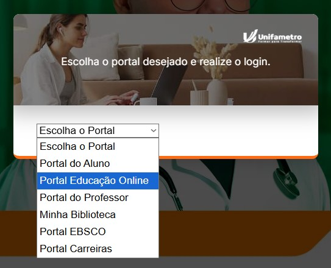
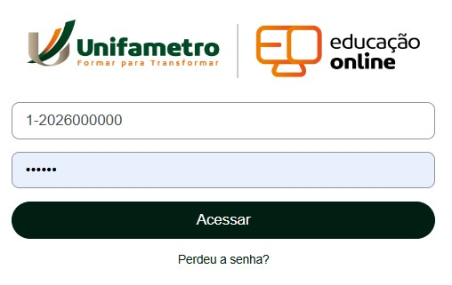
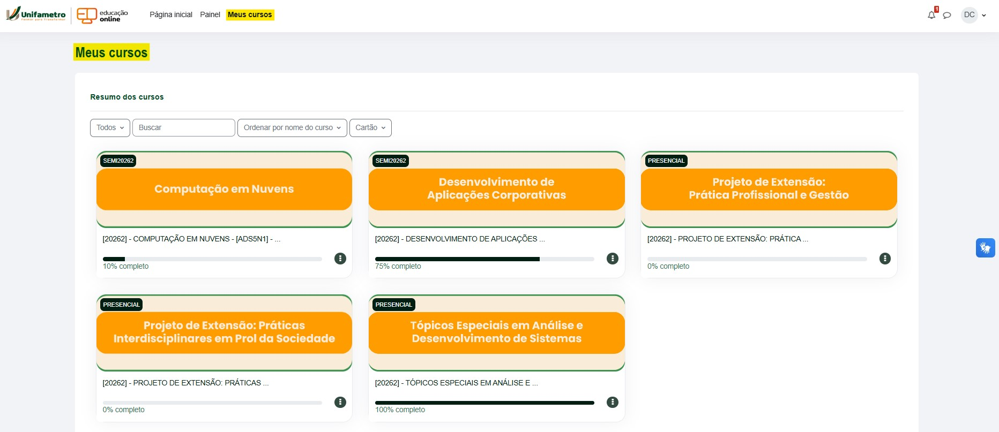

Como Acessar e Usar o Moodle Institucional
O ambiente virtual onde ficam os materiais dos professores, fóruns e locais de envio das atividades avaliativas.
Passo 1: Acessar pelo site oficial
O site da Unifametro disponibiliza o link direto para os portais. Acesse: unifametro.edu.br.
Passo 2: Escolha o portal Educação Online
Selecione a opção "Portal Educação Online" no menu suspenso ou entre diretamente em educacaoonline.unifametro.edu.br.

Passo 3: Realize o login institucional
Insira suas credenciais cadastradas (login de matrícula e senha institucional).

Passo 4: Localize suas disciplinas no Painel Geral
Na aba "Meus Cursos", você visualizará todas as disciplinas matriculadas no semestre corrente, incluindo as disciplinas de extensão e online.

Passo 5: Atenção a prazos e tarefas
Fique sempre atento à barra lateral direita e às datas de fechamento das atividades para não perder pontos.